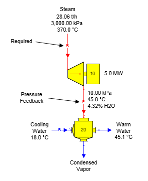
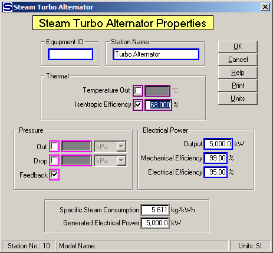

The figure below shows a turbo alternator producing 5.0 megawatts of power using 30 bar steam at 370°C temperature (136.1°C of superheat). The exhaust steam goes to a surface condenser where all of the exhaust is condensed using 18°C cooling water. The steam into the turbo alternator is a required flow because the electrical power output was specified and the exhaust steam uses pressure feedback because the internal pressure of the surface condenser is used to set the exhaust steam pressure.

Data values for the turbo alternator are shown on the Steam Turbo Alternator Properties window below. Pressure feedback is selected so that the internal pressure of the surface condenser is used for the exhaust steam pressure leaving the turbo alternator. Entering 5,000.0 kW for the Electrical Power Output causes the steam flow in to be required.

The figure below shows the Surface Condenser Properties windows with the Internal Pressure entry for the surface condenser to provide a pressure feedback for the turbo alternator's exhaust steam.